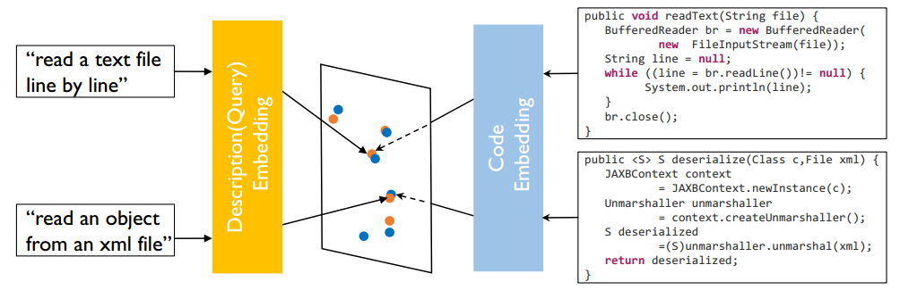
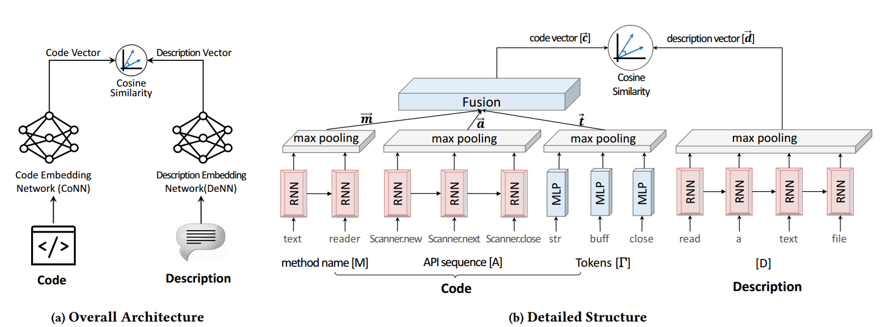
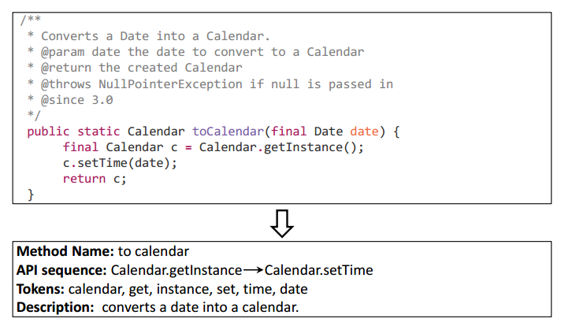
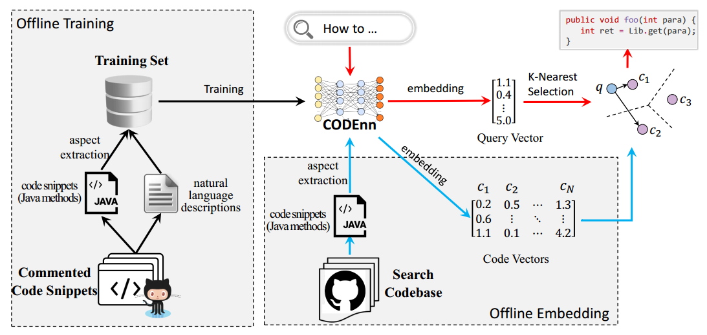
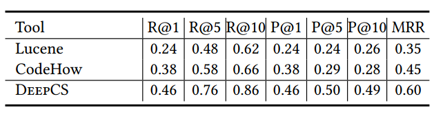

【ASE高级软件工程】第二次结对作业Code Search论文阅读笔记
Deep Code Search
ABSTRACT
we propose a novel deep neural network named CODEnn（Code-Description Embedding Neural Network）.
CODEnn jointly embeds code snippets and natural language descriptions into a high-dimensional vector space.
we implement a code search tool named DeepCS.
1. INTRODUCTION
Other Approaches:
information retrieval（IR）techniques.
problem: mismatch between the high-level intent reflected in the natural language queries and low-level implementation details in the source code.
Our Method:
CODEnn jointly embeds code snippets and natural language descriptions into a high-dimensional vector space
DeepCS trains the CODEnn model on a corpus of 18.2 million Java code snippets（in the form of commented methods）from GitHub.
DeepCS reads code snippets from a codebase and embeds them into vectors using the trained CODEnn.
when a user query arrives, DeepCS fnds code snippets that have the nearest vectors to the query vector and return them.
Evalutate:
- we perform code search on a search codebase using 50 real-world queries obtained from Stack Overflow.
2. BACKGROUND
Embedding: a technique for learning vector representations of entities.
Word Embedding: It represents words as fixed-length vectors so that similar words are close
to each other in the vector space.
Sequence Embedding: Use RNN. The embedding vector of the sentence is summarized from the hidden states $h_1, …, h_T$（select the last state or use maxpooling）.
Joint Embedding: a technique to jointly embed/correlate heterogeneous data into a unifed vector space so that semantically similar concepts across the two modalities occupy nearby regions of the space.
$$
\cal{X}\xrightarrow{\phi}\it{V}_\cal{X}\rightarrow \it{J}(\it{V}_\cal{X},\it{V}_\cal{Y})\leftarrow \it{V}_\cal{Y} \xleftarrow{\psi}\cal{Y}
$$

3. A DEEP NEURAL NETWORK FOR CODE SEARCH

Architecture:
Code Embedding Network: It embeds source code into vectors.（Three parts: the method name, the API invocation sequence, and the tokens contained in the source code）
Description Embedding Network: It embeds natural language descriptions into
vectors.Similarity Module: cosine similarity.
Training:
Training Instance: $\langle C, D+, D-\rangle$. D+ is a postitive description of code snippet C. D- is a negtive description of C(chosen randomly).
Loss: $\cal{L}(\theta) = \sum\limits_{\langle C, D+, D-\rangle \in P} max(0, \epsilon - cos(\mathbf{c}, \mathbf{d+})+cos(\mathbf{c}, \mathbf{d-})) $
4. DEEPCS: DEEP LEARNING BASED CODE SEARCH
Extracion:

We build the training tuples using Java methods that have documentation comments from open-source projects on GitHub.
Training and Searching:

5. EVALUATION
Search Codebase:
Search codebase is different from the training corpus. They are considered in isolation and contain all code（including those do not have Javadoc comments）.
Performance Measure:
- FRank: the rank of the first hit result in the result list.
- SuccessRate@k: percentage of queries for which more than one correct
result could exist in the top k ranked results（$\frac{1}{|Q|}\sum\limits_{q=1}^{|Q|} \delta(FRank_q \leq k)$）. - Precision@k: percentage of relevant results in the top k returned results for each query.
- MRR：the average of the reciprocal ranks of results of a set of queries（$\frac{1}{|Q|}\sum\limits_{q=1}^{|Q|} \frac{1}{FRank_q}$）.
Results:

The symbol ‘+’ indicates the average value.
6. DISCUSSION
Strengths:
- It has the ability to recognize query semantics (e.g., queue an event to be run on the thread* and *run an event on a thread queue)
- Its search results are less affected by irrevant or noisy keyword (e.g., get the content
of an input stream as a string using a specified character encoding). - it not only seeks snippets with matched keywords but also recommends those without matched keywords but are semantically related.
Why does DeepCS Work?
- A unifed representation of heterogeneous data.
- Better query understanding through deep learning.
- Clustering snippets by natural language semantics.
Limitation:
It sometimes ranks partially relevant results higher than the exact matching ones. This
is because DeepCS ranks results by just considering their semantic vectors.